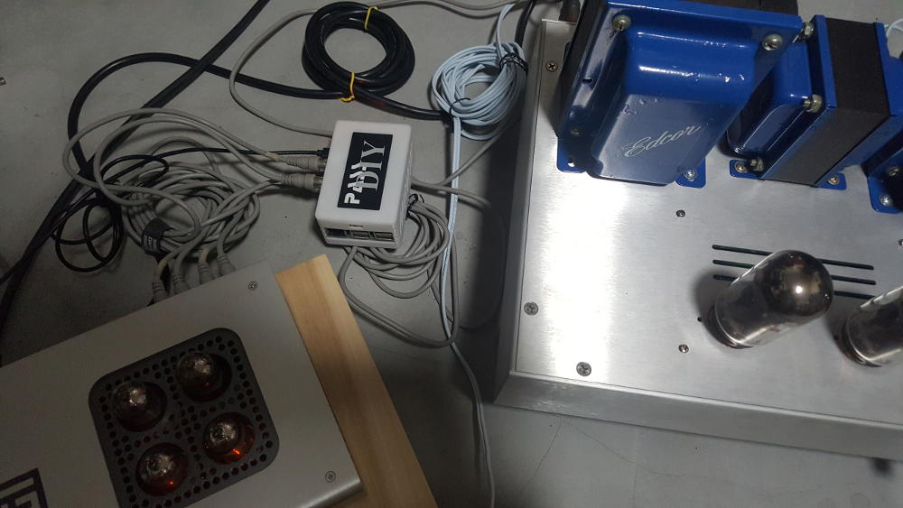

Probably the only "digital" component of my "mostly analog" workshop audio toolchain. It's probably the most popular single board computer - and one of the more affordable ones at under $40. I have mine running Volumio with a HiFiBerry DAC that's plug and go.
